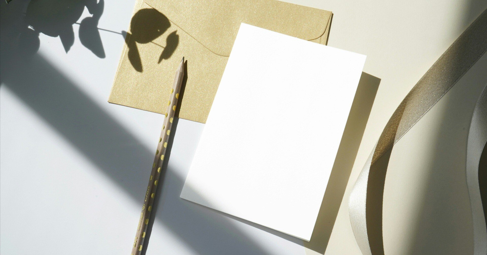

拝啓 未来様
うららかな季節となりました。お元気ですか。
久しぶりに手紙をしたためております。
昨今はスマートフォンやタブレットやらの電子機具の発達が顕著で、こうした手書きの産物は隅に追いやられがちです。
私は古い人間ですから、この風潮に嫌気が差しています。どうにかならないものでしょうか。
まあ貴方には関心のないことでしょう。
貴方は今ではなく、前しか見ておられないでしょうから。
さて。私が手紙を書いた理由。
それは一種の告白です。
私は貴方をお慕い申しておりました。
貴方は昔から人々の希望でした。かくゆう私もその背中ばかりを見ていました。
誰一人貴方の素顔を見たことがありません。
誰一人貴方の素性を知りはしません。
でも、ただ一つわかっていることがあります。
それは、貴方は私の持っていないもの全てを持ち合わせているということです。
羨望の眼差しを向ける者は数知れず。多くの人々が貴方に夢中になっている。
そんな姿を見て、昔はよく嫉妬したものです。
でも、最近気づいたのです。
私も貴方が持っていないものを持っていることに。
だから、私は貴方への憧れを抱きつつ、自分に自信を持つことにしました。
もし貴方が落ちこんだ時。
それは私がそうさせてしまっているのです。
私もまた、貴方を輝かすために精一杯今を生きようと思います。
私が"今を生きる"というのは、おかしな話やもしれませんが。
でも、私は"今を生きる"のです。
そうすることで、後ろ向きだと思われがちな私でも誰かの励みになると信じています。
私たちは決して出会えない。
絶対的な時が隔てる運命。
それでも、私は貴方を想い続けます。
未来様。
これからも貴方様の活躍を遠い昔より願っております。
敬具
今を生きる過去より